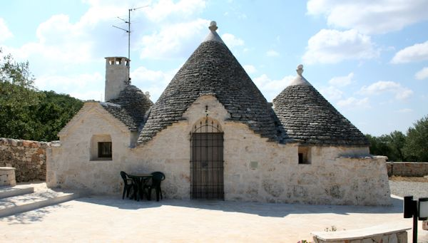
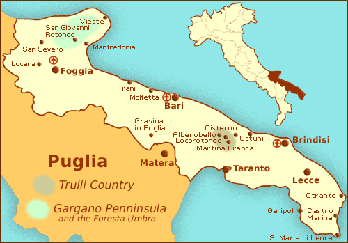
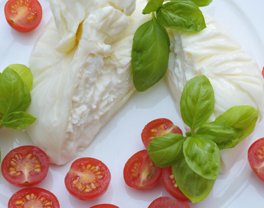
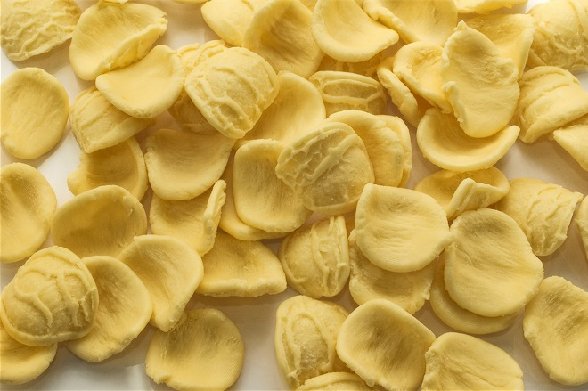

Trulli of Alberobello. Image credit: Trulli Holiday I've recently read an article about an Italian resort Justin Timberlake and Jessica Biel chose to get married. The place is called Borgo Egnazia and it is located in Apulia (Puglia), a region that few tourists know, but that is rich in history, culture and local traditions. The article gave me the idea to write this blog post, as well as the fact that we visited Puglia a few years ago and loved every minute of it. We ate excellent food (obviously) and stayed in a trullo, a characteristic stone building, that is the signature of Alberobello, a small town that in 1996 has been added to the Unesco World Heritage List.
Map of Puglia. Image credit: About.com We tasted the delicious burrata, a kind of mozzarella with a creamy heart.
Burrata pugliese. Image credit: Ceglie in Cucina And the orecchiette, also typical of this region.
Orecchiette. Image credit: ItalianFood.net Puglia is not very far from Rome, so it is an easy stop you might want to consider if you happen to be in that area and have some extra days. However, if you prefer to be guided by an experienced insider and discover the best of this fantastic region, check out Valentina Cirasola's tours. And if you plan to stay in a trullo, our podcast interview with Trulli Holiday will give you some valuable insights. We are sure you will love Puglia, as we did.